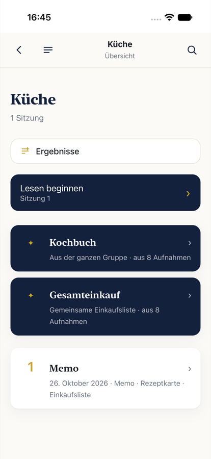
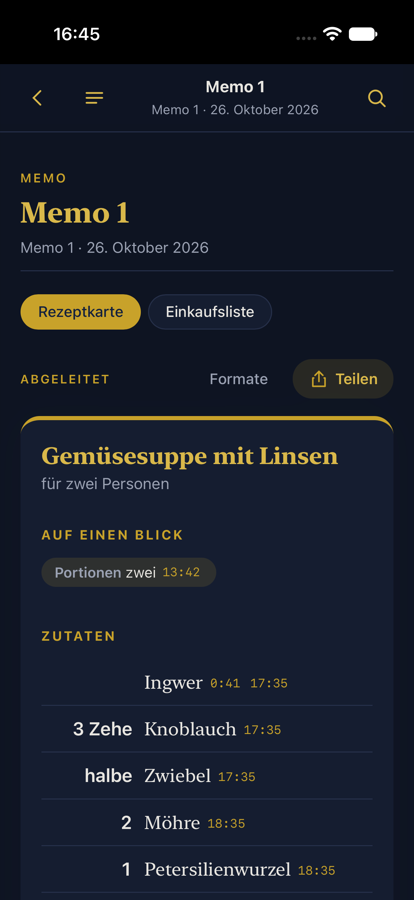
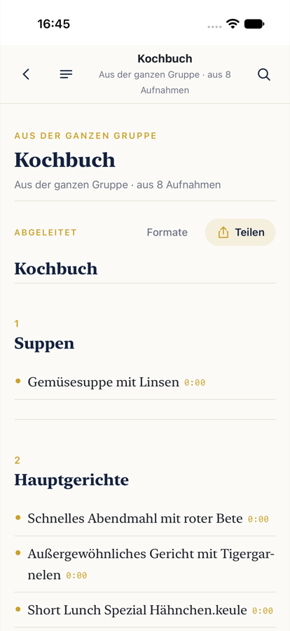
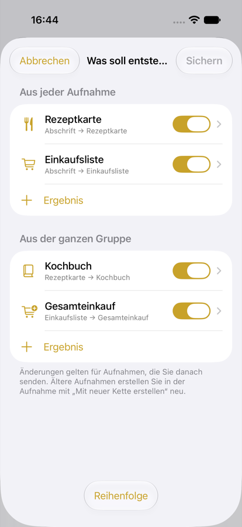

iPhone-App für Lehre, Forschung und AlltagiPhone app for teaching, research and everyday life
Aufnehmen. Lesen. Teilen.Record. Read. Share.
Famulus Academic macht aus einer Aufnahme ein gut lesbares Dokument: die wortnahe Abschrift, sprachlich geglättet und nie gekürzt – und daraus, was Sie brauchen: Skript, Protokoll, Fragen und Antworten, Ideenkarten oder Rezepte. Jede Angabe führt mit einem Tipp zurück an ihre Stelle in der Aufnahme.Famulus Academic turns a recording into a readable document: the close-to-verbatim transcript, smoothed and never shortened – and from it what you need: script, minutes, questions and answers, idea cards or recipes. Every statement leads back to its place in the recording with one tap.
Eine Gruppe sammelt Aufnahmen mit einem Zweck. Wählen Sie beim Anlegen eine Vorlage – sie bestimmt, was aus jeder Aufnahme entsteht und was aus der ganzen Gruppe.A group collects recordings with a purpose. Pick a template when you create it – it decides what comes out of every recording and out of the whole group.
VorlesungLecture
Skript mit Folien, das Wichtigste, Begriffe, Lernfragen – und am Ende das Semesterskript.Script with slides, the key points, terms, review questions – and at the end the term's script.
VorlesungsskriptLecture scriptDas WichtigsteKey pointsBegriffeTermsLernfragenReview questionsSemesterskriptTerm scriptGesamtglossarGlossaryFragenkatalogQuestion bank
SeminarSeminar
Wortnahes Protokoll, Ergebnisprotokoll mit Positionen und Aufgaben – und die offenen Fragen des Semesters.Close-to-verbatim minutes, results with positions and tasks – and the open questions of the term.
SitzungsprotokollSession minutesErgebnisprotokollResultsSeminarreaderSeminar readerOffene Fragen des SemestersOffene Fragen des SemestersArgumentationsgangArgumentationsgang
Kolloquium · VortragsreiheColloquium · talk series
Vortragsprotokoll, Fragen und Antworten, Abstract, genannte Werke – und der Band der Reihe.Minutes of the talk, questions and answers, abstract, works mentioned – and the volume of the series.
VortragsprotokollTalk minutesFragen und AntwortenQ&AAbstractAbstractGenannte WerkeWorks mentionedKolloquiumsbandColloquium volumeThemenkarteThemenkarte
Besprechung · GesprächMeeting · conversation
Dialogprotokoll, Vereinbarungen (wer macht was bis wann), offene Punkte – und die Projektübersicht.Dialogue minutes, agreements (who does what by when), open points – and the project overview.
Kurze Memos werden Ideenkarten – und am Ende ein geordnetes Ideenpapier mit Pitch.Short memos become idea cards – and at the end an ordered paper of ideas with a pitch.
NotizNoteIdeenkartenIdea cardsAufgabenTasksIdeenpapierPaper of ideasPitchPitch
Küche · RezepteKitchen · recipes
Beim Kochen diktieren: jede Aufnahme wird eine Rezeptkarte – zusammen ein Kochbuch.Dictate while cooking: every recording becomes a recipe card – together a cookbook.
RezeptkarteRecipe cardEinkaufslisteShopping listKochbuchCookbookGesamteinkaufCombined shopping list
ForschungsnotizenResearch notes
Gedanken festhalten: Notiz, Thesen, genannte Literatur – und ein Forschungsjournal.Capture thoughts: note, theses, literature mentioned – and a research journal.
Einfach diktieren und lesen.Just dictate and read.
NotizNote
aus jeder Aufnahmefrom every recordingaus der ganzen Gruppefrom the whole group
So geht esHow it works
AufnehmenRecord
Ein Tipp auf das Mikrofon der Gruppe. Folien können Sie dazulegen.One tap on the group's microphone. Add slides if you like.
Ergebnis wählenChoose results
Die Vorlage ist sofort fertig; unter „Ergebnisse“ schalten Sie weitere dazu oder ab.The template is ready at once; under “Results” you switch more on or off.
Lesen & TeilenRead & share
Lesen wie ein Buch, mit Inhaltsverzeichnis. Teilen als PDF, Text oder Markdown – per Mail, Nachricht oder AirDrop.Read it like a book, with contents. Share as PDF, text or Markdown – by mail, message or AirDrop.
AnsehenHave a look

Eine Gruppe als BuchA group as a book

Rezeptkarte aus einem DiktatRecipe card from a dictation

Das Kochbuch der GruppeThe group's cookbook

Was soll entstehen?What should come out?
Was mit Ihren Aufnahmen geschiehtWhat happens to your recordings
Wortnah, nicht erfunden.Close to the words, nothing invented.Die Abschrift wird geglättet, nicht gekürzt. Abgeleitete Ergebnisse sind als solche markiert; Zahlen und Namen, die nicht an der genannten Stelle stehen, heißen „nicht belegt“.The transcript is smoothed, not shortened. Derived results are marked as such; numbers and names not found at the cited place are flagged “not supported”.
Namen nur mit Einwilligung.Names only with consent.Sprecher bleiben „Person A, B …“, bis Sie einen Namen vergeben; im Dokument erscheint er nur mit Einwilligung.Speakers stay “Person A, B …” until you name them; a name appears in the document only with consent.
Stimmen bleiben im Projekt.Voices stay in the project.Stimmabdrücke zum Wiedererkennen in einer Gruppe verlassen den Famulus-Rechner nie.Voiceprints for recognising speakers within a group never leave the Famulus computer.